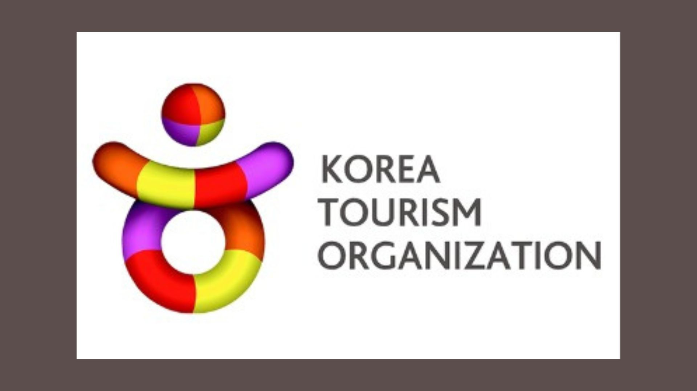
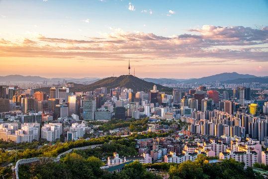
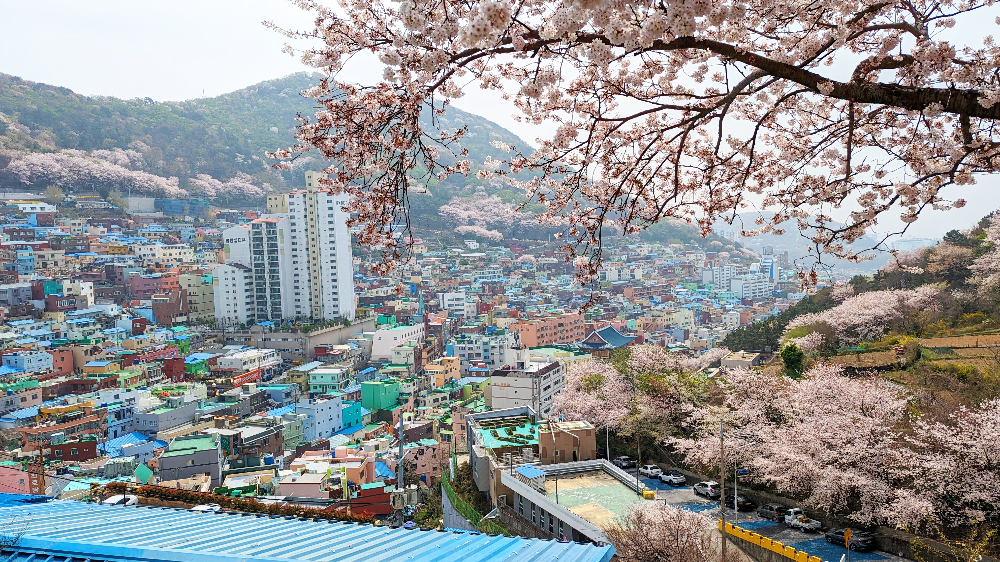
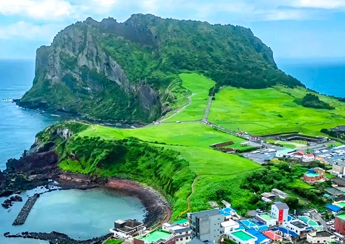

DISCOVER SOUTH KOREA
Tourism & Culture Portal
Welcome to South Korea
Explore the vibrant culture and stunning landscapes of South Korea!
South Korea is famous for its technology, culture, K-pop, food, and beautiful places.
Experience modern cities, ancient palaces, and amazing traditions.
About South Korea
South Korea, officially the Republic of Korea, is a country in East Asia. It is located on the southern half of the Korean Peninsula. South Korea is bordered by North Korea to the north and Japan to the east.
Travel across South Korea and create unforgettable memories. It is truly a Dream Destination for Travelers.- K-Pop: Worldwide sensations like BTS and BLACKPINK are famously from South Korea.
- K-Dramas & Film: Engaging, high-production TV series and movies have a massive global following.
- Beauty & Fashion: Renowned for advanced skincare routines, innovative beauty products (K-beauty), and trendy fashion, particularly in Seoul's Gangnam district.
-
Rich Korean Culture:
South Korea has a rich history filled with traditions, royal palaces,temples, and cultural festivals.
-
Korean Entertainment:
Korean dramas and K-pop music are popular worldwide.Korean entertainment industry attracts millions of fans.
-
Technology & Innovation:
South Korea is one of the most technologically advanced countries in the world.
-
Traditional Food:
Korean cuisine like Kimchi, Bibimbap, and Korean BBQ is loved globally. is loved globally.
-
Modern Lifestyle:
South Korea perfectly combines traditional heritage with modern city life. It is one of Asia’s top tourist destinations.
Famous Tourist Places in South Korea
1. Seoul

Seoul, the capital city of South Korea, is a vibrant metropolis that seamlessly blends ancient traditions with cutting-edge technology. It is home to iconic landmarks such as Gyeongbokgung Palace, N Seoul Tower, and the bustling shopping district of Myeongdong. Visitors can explore traditional markets, experience K-pop culture, and enjoy a diverse culinary scene.
2. Busan

Busan, South Korea's second-largest city, is renowned for its stunning beaches, vibrant nightlife, and rich cultural heritage. Haeundae Beach and Gwangalli Beach are popular spots for sunbathing and water sports. The city also boasts attractions like the Gamcheon Culture Village, Jagalchi Fish Market, and the Busan Tower, offering visitors a blend of natural beauty and urban excitement.
3. Jeju Island

Jeju Island, a UNESCO World Heritage site, is known for its volcanic landscapes, pristine nature, and unique culture. The island offers breathtaking views of the Jeju Volcanic Island and Crater Lakes, along with opportunities for hiking, swimming, and exploring traditional villages.
4. Gyeongbokgung Palace

Gyeongbokgung Palace is the largest and most significant palace in Seoul, showcasing the grandeur of the Joseon Dynasty. Visitors can explore the beautifully preserved architecture, traditional gardens, and exhibits highlighting the history and culture of the Korean royal family. In March 2026, BTS marked their highly anticipated return from military service with a massive comeback concert titled BTS THE COMEBACK LIVE | ARIRANG in Seoul, centered around the iconic Gyeongbokgung Palace area.